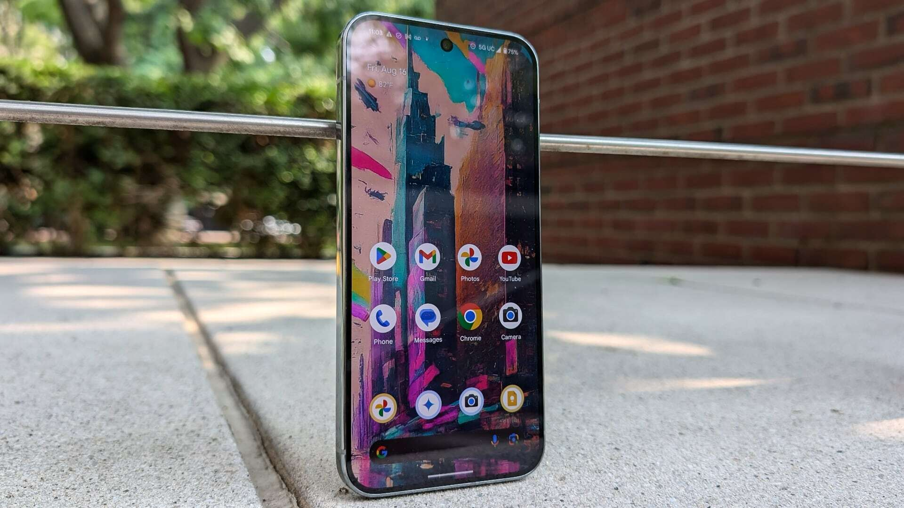

The flagship smartphone market is fiercely competitive, with users expecting top-tier performance, cutting-edge camera technology, and seamless software integration. The Google Pixel Nine Pro XL aims to deliver on all these fronts, positioning itself as a premium device for those who want the best of Google's hardware and AI prowess. This review will explore the key aspects of the Pixel Nine Pro XL, helping you decide if it’s the right upgrade for your mobile needs.
The arrival of the Pixel Nine Pro XL, announced in August 2024 and released shortly thereafter, has been met with anticipation, promising advancements in processing power with the new Tensor G4 chip, an enhanced camera system, and a refined user experience powered by sophisticated AI.
Key Features Explored
Let's delve into what makes the Google Pixel Nine Pro XL stand out. We’ll cover its design and display, camera capabilities, performance and AI integration, and battery life.
Design and Display: Refined and Radiant
The Google Pixel Nine Pro XL features a sophisticated design with a polished aluminum frame and a matte glass back (Corning Gorilla Glass Victus 2 for durability), giving it a premium feel. It maintains the distinctive Pixel camera bar, though with a more pill-shaped design compared to some predecessors, ensuring the phone lies flat on surfaces.
The device sports a large 6.8-inch Super Actua LTPO OLED display. With a resolution of 1344 x 2992 pixels (around 486 ppi) and a variable refresh rate of up to 120Hz, scrolling is exceptionally smooth, and visuals are crisp and vibrant. Google states peak brightness can reach up to 3000 nits, making it easily viewable even in direct sunlight.
Google Pixel Nine Pro XL showcasing its sleek design and color variety.
Camera System: Pro-Level Photography and AI Magic
Google's Pixel line has always been lauded for its camera performance, and the Nine Pro XL continues this tradition. It boasts a pro-level triple rear camera system:
- A 50 MP wide main camera (f/1.68 aperture, 1/1.31" sensor size) for capturing incredible detail and color, especially in low-light conditions.
- A 48 MP ultrawide camera (f/1.7 aperture, 123° field of view) with Macro Focus capabilities.
- A 48 MP telephoto lens (f/2.8 aperture) with 5x optical zoom and Super Res Zoom up to 30x.
The front-facing camera has been upgraded to a 42 MP sensor with autofocus, ensuring sharp selfies and clear video calls. AI-powered features like Magic Editor, Best Take, Photo Unblur, and an "Add Me" feature enhance the photographic experience. For videography, the Pixel Nine Pro XL supports 8K video recording at 30 FPS (powered by Video Boost) and 4K at up to 60 FPS, along with features like Night Sight Video and Audio Magic Eraser.
Close-up of the Google Pixel Nine Pro XL's triple rear camera system.
Performance and AI: The Tensor G4 and Gemini Integration
At the heart of the Pixel Nine Pro XL is Google's new Tensor G4 chip, paired with 16GB of RAM. While not necessarily topping raw benchmark charts against all competitors, the Tensor G4 is designed to power Google's advanced AI and machine learning capabilities efficiently. This translates to a smooth user experience, quick app loading, and intelligent features throughout the Android OS (likely launching with Android 15).
A significant highlight is the deeper integration of Gemini, Google's advanced AI model. This offers more powerful Google Assistant interactions, improved on-device processing for tasks like translation and summarization, and a generally smarter, more helpful user experience. The phone also comes with the promise of seven years of OS, security, and Pixel Feature Drop updates, ensuring longevity.
Google Pixel Nine Pro XL interface showcasing its AI capabilities.
Battery Life and Charging: All-Day Power
The Pixel Nine Pro XL is equipped with a 5060mAh battery, which Google claims can last over 24 hours on typical usage and up to 100 hours with Extreme Battery Saver. Real-world usage suggests decent battery life, generally lasting a full day for most users, though heavy use might still require a top-up by evening.
In terms of charging, it supports 45W wired fast charging (though the charger is sold separately), capable of charging up to 70% in about 30 minutes. It also supports fast wireless charging (up to 23W with compatible Pixel Stands) and Battery Share to wirelessly charge other devices.
Key Specs at a Glance
- Processor: Google Tensor G4
- RAM: 16GB
- Storage: Options typically include 128GB, 256GB, 512GB (UFS 3.1)
- Display: 6.8-inch LTPO OLED, 1344 x 2992 pixels, 1-120Hz refresh rate, up to 3000 nits peak brightness
- Rear Cameras: 50MP wide, 48MP ultrawide, 48MP 5x telephoto
- Front Camera: 42MP with autofocus
- Battery: 5060mAh (typical)
- Operating System: Android (likely 15 at launch) with 7 years of updates
- Durability: IP68 dust/water resistant, Corning Gorilla Glass Victus 2
Final Thoughts on the Pixel Nine Pro XL
The Google Pixel Nine Pro XL is a compelling flagship smartphone that delivers a refined design, a stunning display, and a truly intelligent software experience powered by the Tensor G4 and Gemini AI. Its camera system remains a strong point, offering versatility and exceptional image quality backed by Google's computational photography prowess.
While battery life and charging speeds are good, they may not lead the pack when compared to some ultra-fast charging competitors. However, for users entrenched in the Google ecosystem or those who prioritize camera excellence, clean software, and long-term update support, the Pixel Nine Pro XL is undoubtedly a top contender. It offers a polished and feature-rich experience that showcases Google's vision for the future of mobile computing.